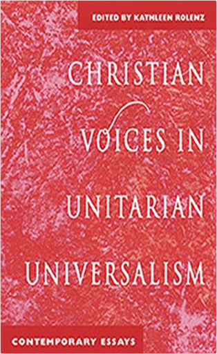
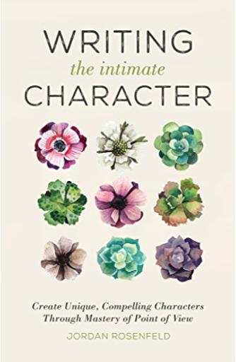

Shugo Chara 3Peach-Pit Shugo Chara 3Peach-Pit CAN A BAD GUY TURN GOOD?
Amu’s Guardian Characters have been stolen by her teacher, a bitter man whose dreams died when his own egg was smashed. When Amu goes to reclaim her Characters, the School Guardians are there to help. But can they get Amu’s eggs back and put the evil teacher’s egg together again?
This volume of Shugo Chara! includes special extras after the story!  Shugo Chara! 2Peach-Pit Shugo Chara! 2Peach-Pit FRIENDS IN NEED
Cute schoolgirl Amu has a secret: She has three magical companions. Only these enchanted Guardians know who Amu’s true self is, and they’ll do anything to help her unlock her heart! They’re searching for a magic egg, a powerful weapon that could mean trouble in the wrong hands. To find this egg, Amu will have to change her life–and finally learn to be true to herself.
Includes special extras after the story!
[Rating logo:] Ages 13+  Topgrading: How Leading Companies Win by Hiring, Coaching and Keeping the Best PeopleBradford D. Smart Ph.D. Topgrading: How Leading Companies Win by Hiring, Coaching and Keeping the Best PeopleBradford D. Smart Ph.D. World renowned consultant and industrial psychologist shares his proven strategy for hiring "A" players, building dream teams, and achieving excellence—a fool-proof system now in place at today's leading companies. Great companies are made, not born. The secret is hiring the right people—the "A" players. This is, of course, easier said than done. Statistically, half of all employment situations result in a mis-hire; the wrong person for the wrong job. And with the cost of a mis-hire at twenty-four times salary, the financial drain can be staggering! Compare that with Brad Smart's 90% success rate and understand why topgraded organizations such as General Electric and Allied Signal consistently beat the competition. In this unparalleled work, Dr. Smart introduces readers to the tograding concept—how and why it works. The author sets forth principles which hold true for Fortune 500 companies as well as small emerging companies. Topgrading is a silver bullet—the corporate initiative that empowers all other corporate initiatives. The author spells out his practical hands-on approach and provides intriguing case studies culled from his file of more than 4,000 in-depth interviews. Topgrading's expert coaching techniques are also revealed and readers learn how managers who topgrade become leaders, achieving success and excellence not only for their companies, but also for themselves. This book is not without controversy, however, as Brad discusses how those who don't pull their own weight, the chronic "C" players, must step aside, be redeployed, or terminated.  Steroids and Doping in Sports: A Reference HandbookDavid E. Newton Ph.D. Steroids and Doping in Sports: A Reference HandbookDavid E. Newton Ph.D. The use of performance-enhancing drug use in sports is never out of the news, whether it's cycling, baseball, Olympic sports, or mixed martial arts. Interestingly, the use of steroids to boost human performance stretches back to ancient times. Written by a former professor of chemistry, Steroids and Doping in Sports: A Reference Handbook provides not only information about all aspects of performance-enhancing drugs in sport, but also supplies a thorough, scientific background about the drugs themselves—the chemistry and biology of steroids, what scientists have learned about these substances, and the specific ways in which they affect the human body.
The author documents the cat-and-mouse actions of the athletes and those who supply them with performance-enhancing drugs to push the envelope, and of the sport and athletic groups—such as the NCAA and the International Cycling Union—that try to monitor and control such drug use. The work also includes a chapter containing snapshot profiles of many individuals involved in steroid use scandals and organizations with an interest in topics related to steroid abuse.  The Psychology of DexterBella DePaulo PhD The Psychology of DexterBella DePaulo PhD Dexter Morgan: Police forensic analyst. Family man. Serial killer. And the star of Showtime’s most-watched series, Dexter.
Aimed at Dexter devotees and armchair psychologists, The Psychology of Dexter takes on the psychological complexities of the popular series with an eye towards insight and accessibility. It analyzes not just the title character, but his family, coworkers, and even his viewers. What makes Dexter tick? And what makes a show about a serial killer so appealing to those of us at home?
From the implications of faking normalcy (could it be behind Dexter’s still-in-progress emotional growth?) to where the show weighs in on the psychological debate between nature and nurture, The Psychology of Dexter gives fans a peek inside Dexter’sand Dexter’spsyche.  How To Run The European ParliamentMarilyn Political How To Run The European ParliamentMarilyn Political DESCRIPTION AND REVIEWS BY POLITICAL LEADERS:
How do you gain influence and publicity in the European Parliament? How do you compete successfully with the Council and the Commission? How can you use reporters and lobbyists to advance your political career?
How to Run the European Parliament offers a unique look behind the scenes and reveals the secret tactics and manoeuvres Members of the European Parliament need to master in order to prevail.
This brutally honest tutorial is a must-read for all MEPs, assistants, public servants, lobbyists, and journalists who want to understand how power politics is played.
JACEK SARYUSZ-WOLSKI | Vice-President of the European People’s Party
“Achieving success as an MEP, both nationally and within the EU, requires many skills - mastering the nuances of the legislative process, negotiating with impact, building networks, maximizing support and votes, organizing day-to-day functioning with optimal results, and many more. Marilyn Political's insightful tutorial captures these nuances in one book that every aspiring MEP and his collaborators should read.”
ALEXANDER GRAF LAMBSDORFF | Vice-President of the European Parliament
“Unique and impressive. An absolute must-read for all new Members of the European Parliament.”
PETRI SARVAMAA | Vice-Chair of the European Parliament’s Committee on Budgets
“Astonishing read! It's merciless, unforgiving, and so true. As an MEP I could not imagine a better guide into ways of influencing political decision-making in Brussels. I regularly go back to the advice of the book. And I make sure all my advisers and assistants know the text by heart.”
MARKUS FERBER | Vice-Chair of the European Parliament’s Committee on Economic and Monetary Affairs
“How to Run the European Parliament provides an informed insight on what happens behind the curtains. From negotiation strategies to shaping public perceptions - this book is the perfect read if you want to gain an in-depth understanding of how European policy making actually works.”
LINNÉA ENGSTRÖM | Vice-Chair of the European Parliament’s Committee on Fisheries
“This book will teach you the mind-set and psychology of the European Parliament. Being a European politician means: relying on good advisers and having the confidence and strength to be patient, generous, and trustworthy. The road to success lies in hard work - and making the right choices. This book will give you exactly the push you need, and the direction to set you on the right path.”
ANDREY NOVAKOV | Member of the European Parliament
“One of the most get-to-the-point, useful, and must-have political books I have in my library.”
IVAN ŠTEFANEC | Member of the European Parliament
“The book is a very useful and enjoyable reading, particularly for newcomers to the European Parliament. It is a good overview of parliamentarian activities. It reassured me about what I was doing right and where I should improve.”
JONÁS FERNÁNDEZ | Member of the European Parliament
“This book makes for fascinating - and funny - reading. More importantly, it is quite useful, particularly for newcomers. I highly recommend it to any new MEP as absolutely essential. It provides quite a number of practical suggestions, and not to be underestimated, a fair amount of laughing, something that should never be in short supply when working at the European Parliament.”
SANDER LOONES | Vice-Chair of the European Parliament’s Committee on Economic and Monetary Affairs
“The European House of Cards, but with a healthy portion of pragmatism.”
LOOK INSIDE THE BOOK:
www.marilynpolitical.com/publications  The Emotional Wound Thesaurus: A Writer's Guide to Psychological TraumaBecca Puglisi, Angela Ackerman The Emotional Wound Thesaurus: A Writer's Guide to Psychological TraumaBecca Puglisi, Angela Ackerman Readers connect to characters with depth, ones who have experienced life’s ups and downs. To deliver key players that are both realistic and compelling, writers must know them intimately—not only who they are in the present story, but also what made them that way. Of all the formative experiences in a character’s past, none are more destructive than emotional wounds. The aftershocks of trauma can change who they are, alter what they believe, and sabotage their ability to achieve meaningful goals, all of which will affect the trajectory of your story. Identifying the backstory wound is crucial to understanding how it will shape your character’s behavior, and The Emotional Wound Thesaurus can help. Inside, you’ll find: • A database of traumatic situations common to the human experience • An in-depth study on a wound’s impact, including the fears, lies, personality shifts, and dysfunctional behaviors that can arise from different painful events • An extensive analysis of character arc and how the wound and any resulting unmet needs fit into it • Techniques on how to show the past experience to readers in a way that is both engaging and revelatory while avoiding the pitfalls of info dumps and telling • A showcase of popular characters and how their traumatic experiences reshaped them, leading to very specific story goals • A Backstory Wound Profile tool that will enable you to document your characters’ negative past experiences and the aftereffects Root your characters in reality by giving them an authentic wound that causes difficulties and prompts them to strive for inner growth to overcome it. With its easy-to-read format and over 100 entries packed with information, The Emotional Wound Thesaurus is a crash course in psychology for creating characters that feel incredibly real to readers.  Crash Override: How Gamergate (Nearly) Destroyed My Life, and How We Can Win the Fight Against Online HateZoe Quinn Crash Override: How Gamergate (Nearly) Destroyed My Life, and How We Can Win the Fight Against Online HateZoe Quinn You've heard the stories about the dark side of the internet—hackers, #gamergate, anonymous mobs attacking an unlucky victim, and revenge porn—but they remain just that: stories. Surely these things would never happen to you.
Zoe Quinn used to feel the same way. She is a video game developer whose ex-boyfriend published a crazed blog post cobbled together from private information, half-truths, and outright fictions, along with a rallying cry to the online hordes to go after her. They answered in the form of a so-called movement known as #gamergate—they hacked her accounts; stole nude photos of her; harassed her family, friends, and colleagues; and threatened to rape and murder her. But instead of shrinking into silence as the online mobs wanted her to, she raised her voice and spoke out against this vicious online culture and for making the internet a safer place for everyone.
In the years since #gamergate, Quinn has helped thousands of people with her advocacy and online-abuse crisis resource Crash Override Network. From locking down victims' personal accounts to working with tech companies and lawmakers to inform policy, she has firsthand knowledge about every angle of online abuse, what powerful institutions are (and aren't) doing about it, and how we can protect our digital spaces and selves.
Crash Override offers an up-close look inside the controversy, threats, and social and cultural battles that started in the far corners of the internet and have since permeated our online lives. Through her story—as target and as activist—Quinn provides a human look at the ways the internet impacts our lives and culture, along with practical advice for keeping yourself and others safe online. Hate to Want You: Forbidden HeartsAlisha Rai Alisha Rai, one of contemporary romance’s brightest stars, makes her Avon Books debut with the first novel in the sexy Forbidden Hearts series!
One night. No one will know.
That was the deal. Every year, Livvy Kane and Nicholas Chandler would share one perfect night of illicit pleasure. The forbidden hours let them forget the tragedy that haunted their pasts—and the last names that made them enemies.
Until the night she didn’t show up.
Now Nicholas has an empire to run. He doesn’t have time for distractions and Livvy’s sudden reappearance in town is a major distraction. She’s the one woman he shouldn’t want . . . so why can’t he forget how right she feels in his bed?
Livvy didn’t come home for Nicholas, but fate seems determined to remind her of his presence—and their past. Although the passion between them might have once run hot and deep, not even love can overcome the scandal that divided their families.
Being together might be against all the rules . . . but being apart is impossible.
One of Amazon's Best Romances of the Month & Best Romances of 2017! How to Renounce Your U.S. Citizenship in Two Easy StepsGlen Lee Roberts The author writes from a position of unique experience: “That day, June 21, 2013, I had walked into the US Embassy an American Citizen and walked out without any nationality, Stateless: an Earthling.” A real life "man without a country". He brings the requirements and process of renouncing U.S. Citizenship down to earth. He takes the politics, confusion, and fear out of the process. After reading this book you'll know exactly what you need to do, and how to do it. You'll also be amazed at how quick and easy it is. Included are copies of all of the government forms he filed in the process, as well as parts of the U.S. State Department's Foreign Affairs Manual which express the process form the government's viewpoint. Of course, a copy of his "Certificate of Loss of Nationality of the United States (CLN)" is also included, signed, sealed and stamped by U.S government authorities. He cannot help you decide if you should renounce your citizenship or not. He takes you through the process so you can exercise your rights if you decide to. You too, will be able to walk into a U.S. Embassy as an American and leave as a “foreigner”. With one signature, step outside of all the politics and drama associated with the United States. Remember, all rights and privileges and all duties and allegiance you had as an American are gone. You've been born again! Why renounce your U.S. Citizenship? While it seems that a large portion of the world's population wants to move to the United States and become a citizen there, there is a movement of another kind too. As throughout the history of the United States, some American's chose to leave the country and renounce their citizenship. That process based on my personal experiences is straightforward and simple. One aspect of the process that is completely irrelevant is the question: Why? It is not asked, and if answered not relevant to the process. It is simply your right to renounce, and the choice is yours alone to make. As a practical matter, everyone that learns of your decision will ask you why! For me, the short answer is simply that “I outgrew the United States.” The long answer would start with something along the lines of: “For roughly 20 years, basically my entire adult life in the United States I was in conflict. My conflict was with every nature of 'authority', local, state, corporate, prestigious universities as well as at a federal level including the CIA, the FBI, the U.S. Military and even the President of the United States. The conflict was a result of my perspectives on privacy, surveillance, free of information and related topics. Really, it was my expression of my viewpoints on those topics which was the conflict.” Completing the long answer would return me to that era of conflict and bring the fear and anger back to myself, as well as inflict it on you. Life offers much more interesting adventures and I am off to explore them now. Christian Voices in Unitarian Universalism: Contemporary EssaysKathleen Rolenz Fifteen personal stories from laity and clergy alike show what it means to be a Unitarian Universalist Christian today.These men and women arrive at their faith by many paths—influenced by the Bible, Jesus Christ Superstar and even the Bernstein Mass. Here is a fresh and much-needed look at UU Christians, who, for decades, have kept the work and spirit of Christianity alive in our liberal religion. Writing the Intimate Character: Create Unique, Compelling Characters Through Mastery of Point of ViewJordan Rosenfeld Craft Vibrant Characters and an Intimate Reading Experience
The key to excellent fiction lies in its characters: the unforgettable protagonists, antagonists, and secondary characters who populate the world of your story. Understanding and effectively using point of view allows you to write a powerful narrative that draws readers in and engages them with characters in a meaningful way. Through a blend of practical instruction, useful examples, and helpful exercises, Writing the Intimate Character shows you how to create the experience of living through a character rather than just reading about one.
Inside, you'll learn:The functions and benefits of first-person, third-person intimate, omniscient, and second-person points of view.How to apply character cues—specific behaviors, sensory perceptions, dialogue, and visual imagery—to develop a realistic protagonist and secondary cast.The surface and subset feelings that get to the root of your character’s emotions.How different viewpoints affect the story you want to tell.Writing the Intimate Character helps you craft a novel in which readers can experience your characters' senses, dive inside their minds, and truly feel their emotions.
"Writing the Intimate Character, the latest engaging guide by Jordan Rosenfeld, is a rich resource we'll all be learning from for the rest of our lives. 'Does the term point of view seem too dull and dry?' she asks. 'Try intimacy instead.' And then she shows us how, with diverse examples and wise observation. Now that I have Jordan's take on how to create a character from the inside out, I'm eager to get to it. You, too, will find this book that inspiring." —Rebecca Lawton, author of Sacrament: Homage to a River and other books
"Writing the Intimate Character provides insights, examples, and exercises that will be useful not only to those who are new to writing fiction but to those, like myself, who are coming back to it after a break. Jordan Rosenfeld's explanation of how narrative voice works with point of view and other literary elements to create characters that readers care deeply about is clear and revelatory. The book can be worked through methodically or dipped into as needed. It's a useful tool for getting the gears of imagination working or for jump-starting and fine-tuning a work in process." —Zoe Zolbrod, author of the novel Currency and the memoir The Telling
"Jordan Rosenfeld has a keen insight into how to construct characters who are truly lived-in. With intelligence and wit, she walks you through every element of powerful characterization, from selecting your POV to demonstrating character growth throughout your story. Whether you're new to fiction or a more experienced writer, put your trust in Jordan Rosenfeld; she'll help you tell a better story." —Laura Bogart, freelance writer and novelist |

 Made with Delicious Library
Made with Delicious Library